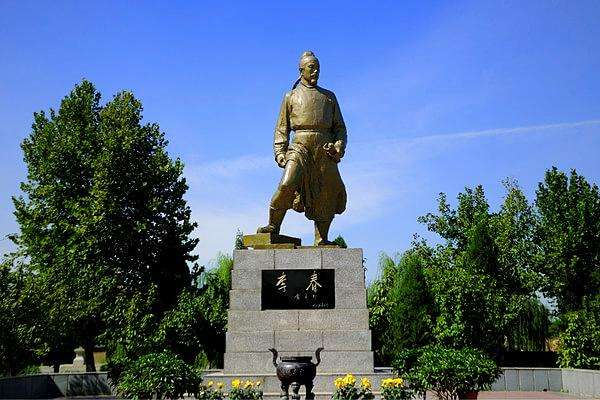
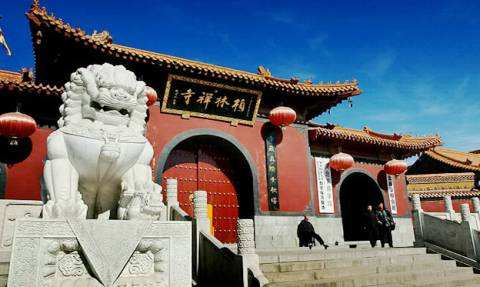
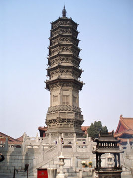
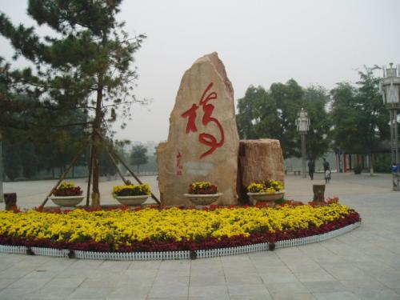
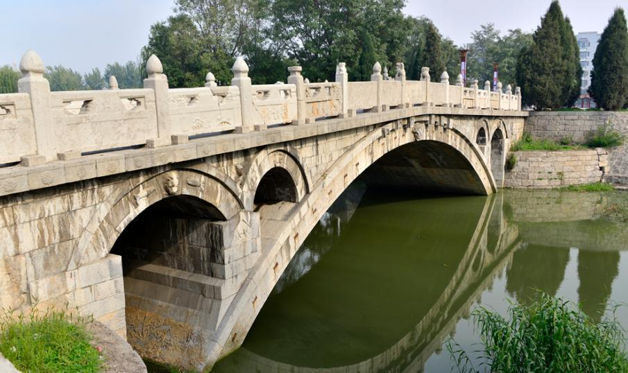
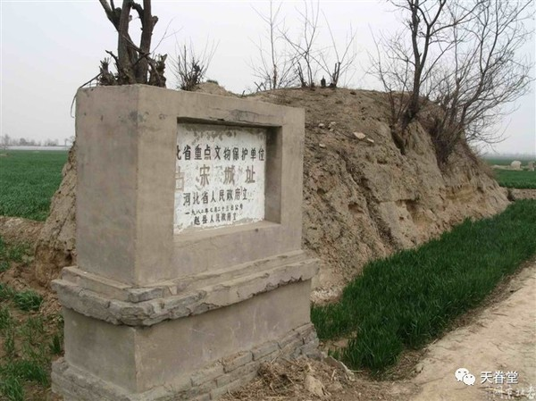
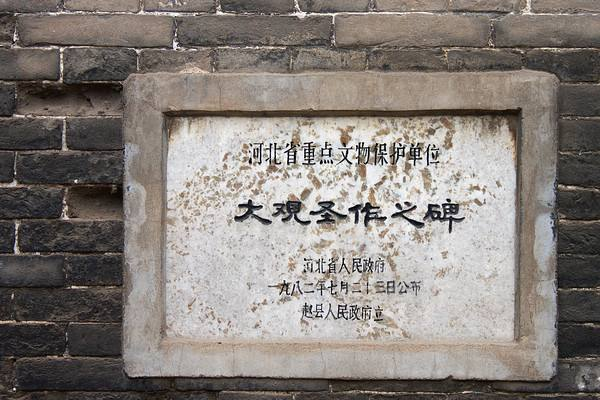

赵州桥旅游攻略 |
| 赵州桥又名安济桥俗称大石桥，是中国河北省石家庄市赵县境内一座跨洨河的石拱桥，由隋朝匠师李春建造，是世界上现存年代最久远、跨度最大、保存最完整的单孔坦弧敞肩石拱桥 。 |
| 旅游景点: |
| ①李春雕塑 李春，隋代造桥匠师，赵州桥的建筑人，这个浓缩了中华人民智慧结晶的标志性桥梁，开创了中国桥梁建造的崭新局面，为中国桥梁技术的发展作出了巨大贡献。 |
|  |
| ②赵州观音院 赵州观音院,就是今天的柏林禅寺。柏林禅寺始建于汉献帝建安年间196～220年,古代称观音院,南宋称为永安院,现在称为柏林禅寺。 |
|  |
| ③柏林禅寺塔 柏林禅寺塔它最早建于汉代献帝建安年间(196～220),古代称观音院,南宋名为永安院,自元代起改名为柏林禅寺。 |
|  |
| ④永通桥公园 永通桥公园位于赵县城西门与西关之间。总体规划占地面积十五点八公顷，其中一期占地五点四公顷。 |
|  |
| ⑤永通桥 永通桥又称小石桥，建于唐永泰初年，为单跨圆弧敞肩石拱桥，桥面两旁有正方形望柱22根，栏板下面的两端垫在石墩上，中间悬空。 |
|  |
| ⑥宋子城遗址 宋子城遗址在今河北省赵县东北部，故城遗址东西长700米，南北宽550米，占地38.5万平方米，城墙高4米，底宽6-10米不等，最高处约4米。 |
|  |
| ⑦大观圣作之碑 大观圣作之碑是中国现存的大观圣作之碑中保存最好的一通。碑文资料记载详细，为研究北宋学校、科举取士制度提供了可靠的资料。 |
|  |
注意事项：
|